The Roman Scorpion: Rome's Sniper Weapon
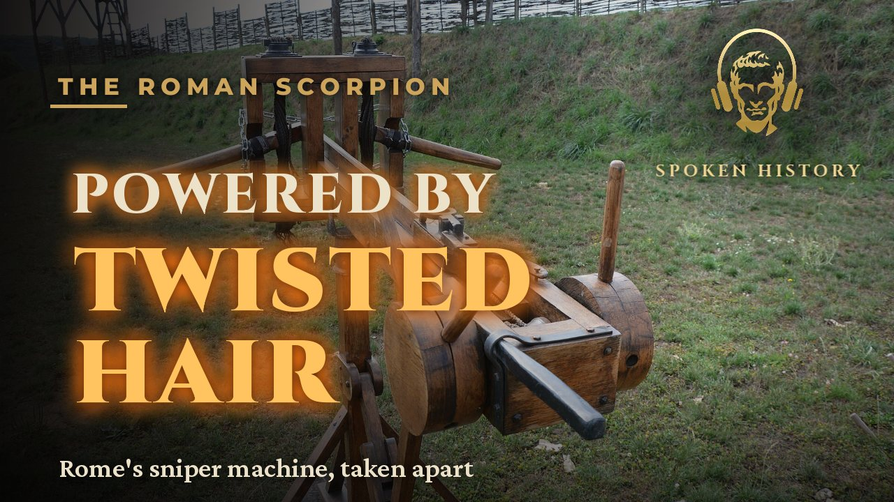
A Gaulish warrior stands on a burning wall at Alesia in 52 B.C., hurling lumps of tallow and pitch down onto the Roman siege works. Then something hits him. A bolt, loosed from a machine he never even saw, goes clean through his right side. He falls. The man beside him steps over the body and takes his place, and the same invisible sting takes him too. A third steps up. Then a fourth.
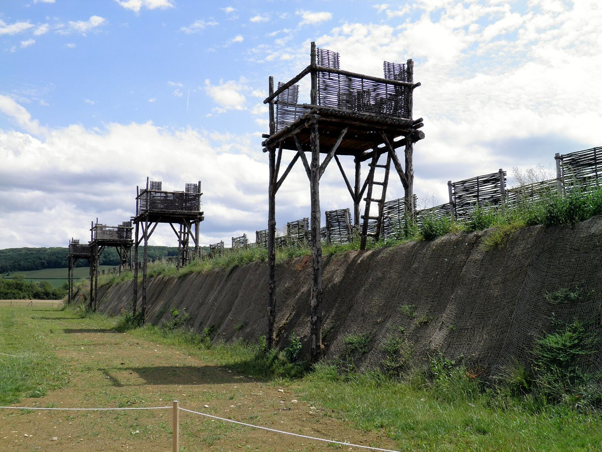
Julius Caesar was watching, and he wrote it down because, he said, it was worth remembering. The machine he describes is the Roman scorpion: a device that stored the strength of twisted rope and released it in a single snap. This article takes one apart: how it worked, who built it, how deadly it really was, and what the evidence can and cannot prove. The truth is stranger than the legend.
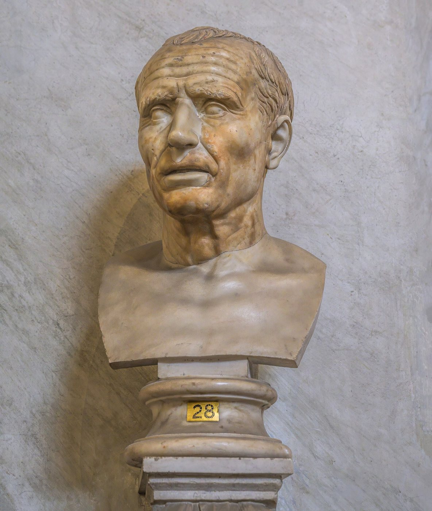
Born in an arms race
The scorpion was not a Roman invention. It was Greek. Around 399 B.C., Dionysius, the tyrant of Syracuse, gathered the best craftsmen he could find and told them to invent new weapons. The result was the first true artillery: a giant crossbow, braced against the belly of the operator.
A few generations later, engineers discovered something far more powerful. Torsion. Instead of bending a bow, twist a rope and let it spring back. By the time of Alexander the Great, torsion machines were in action at the siege of Tyre, and Rome met them as a victim. A Byzantine encyclopedia, the Suda, says that when the Romans besieged Syracuse, Archimedes' little scorpions fired through tiny openings in the walls, straight at the soldiers below. The Romans took the hint.
Vitruvius and the recipe
By the age of Augustus the scorpion was standard kit, and we know how it was built because an army engineer wrote the manual. Vitruvius spent his career supplying and repairing ballistae, scorpions and other artillery, and he gives the recipe in Book 10 of his work on architecture.
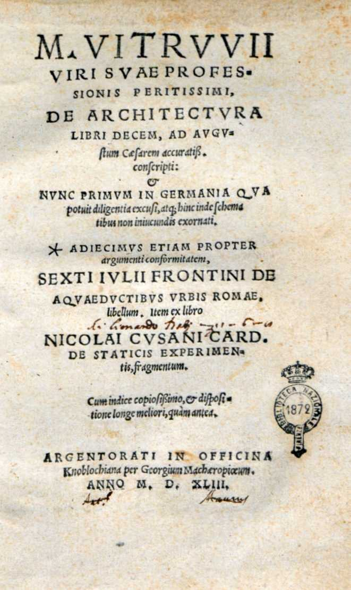
The recipe is beautifully simple, and one number rules everything: the length of the bolt. Divide it by nine and the result is the width of the hole the springs pass through. Every other part of the machine is measured in multiples of that hole. The channel the bolt slides along is nineteen holes long. No blueprint needed, just a bolt and some arithmetic.
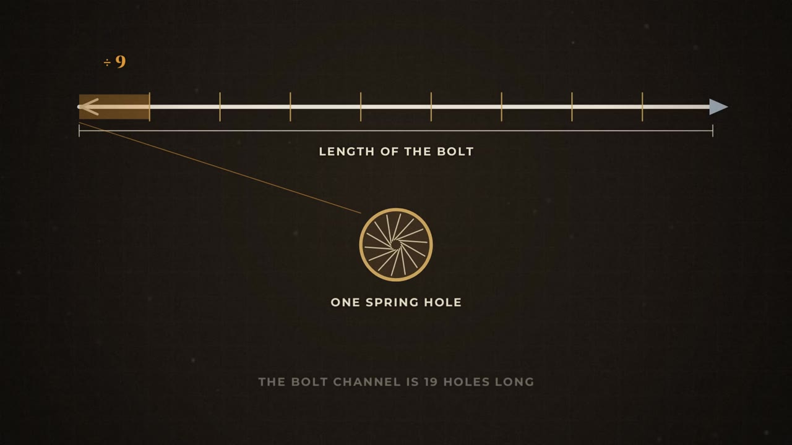
How a torsion engine works
A bow stores its energy in bent wood. The scorpion stores it in twist. On each side of the frame sits a fat bundle of cord: sinew, or, as Vitruvius says, hair, generally women's hair. Each arm is jammed into the middle of its bundle.
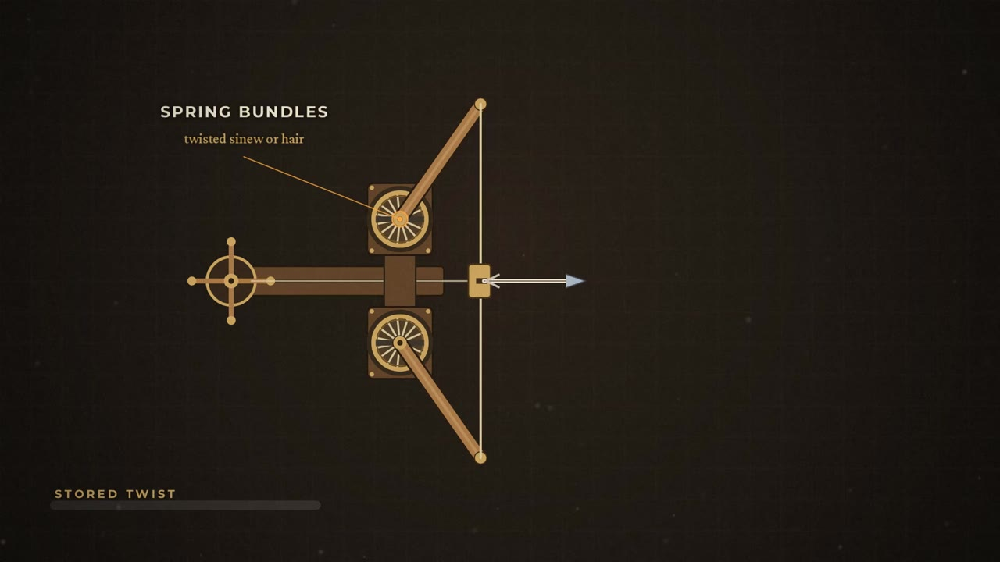
Crank the winch and the bowstring drags both arms backward, twisting the bundles tighter and tighter, like wringing out a wet towel. Pull the trigger and all that stored twist snaps back, whipping the arms forward. The string hurls the bolt down its groove.
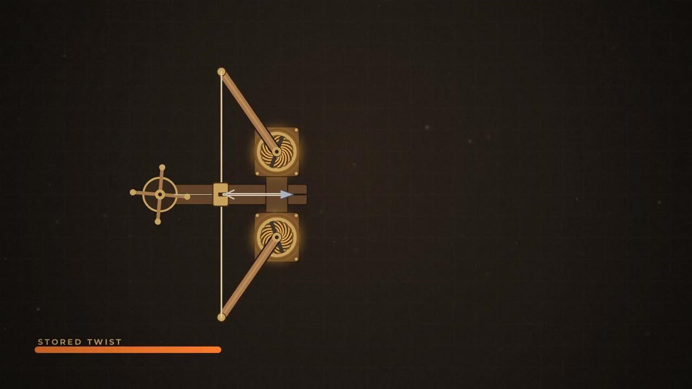
Tuned like a lyre
Crews did not just build these machines. They tuned them. Vitruvius says each side was tightened until, struck by hand, both springs gave the same note. Roman artillery was tuned by ear, like a lyre.
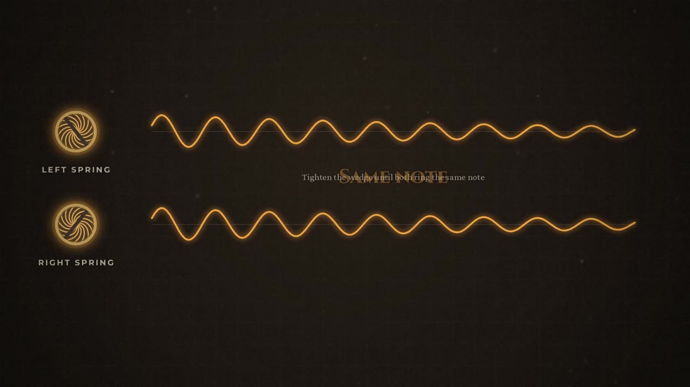
The real thing: a machine from Xanten
There is a real machine to point to. In 1999, pieces of a small Roman bolt-shooter were collected from a gravel pit near Xanten, in Germany: a first-century machine with its wooden frame almost intact. Replicas, built to the millimetre, show what it was. Compact, plated with metal, and light enough, says the engineer Alan Wilkins, to carry on one shoulder.
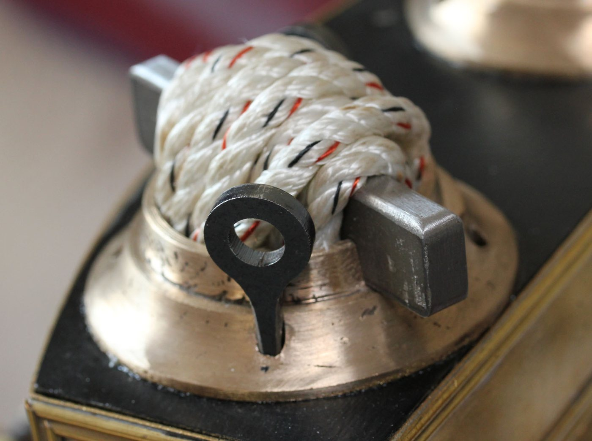
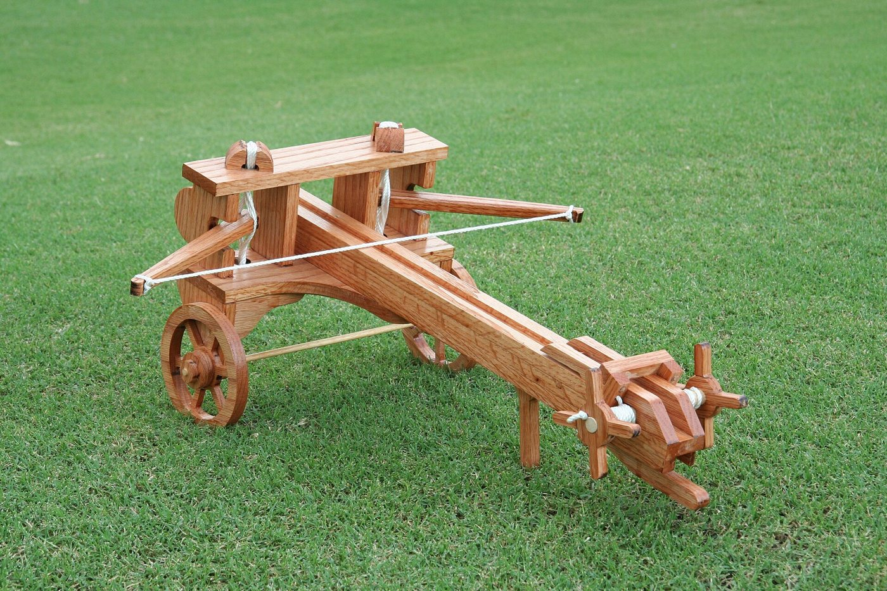
A legion on the march
The writer Vegetius, late and describing an idealised older army, says every legion had fifty-five of these on carts, one for every century, with mules to pull it and a squad of eleven men to crew it. They stood behind the heavy infantry. Vegetius makes a bold promise: that against their onslaught, neither armoured cavalry nor shield-bearing infantry could stand. Treat that with care, because he wrote long after the period he praises.
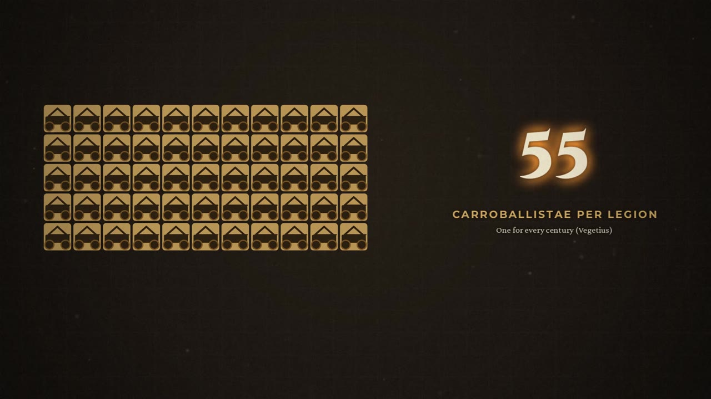
Trajan's Column, dedicated in A.D. 113, shows these carts in the field. Mules in front, crews at work. Unlike Vegetius, this is contemporary Roman evidence.
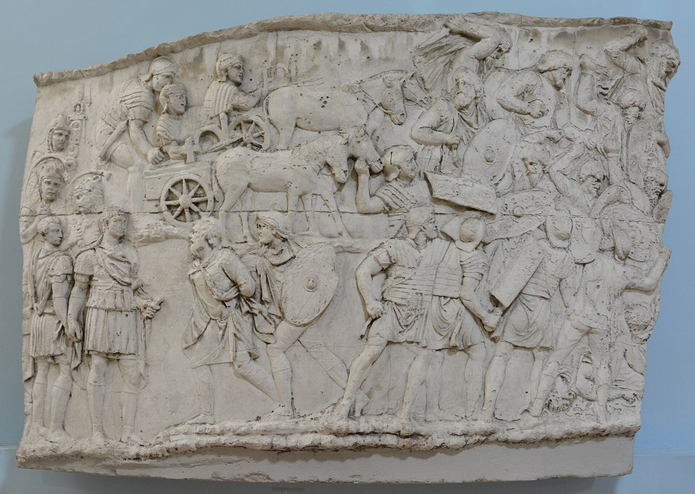
Shock weapons: Britain, 55 B.C.
These machines were not only killers. They were shock weapons. In Britain in 55 B.C. Caesar's transports were stuck off a beach crowded with British warriors, so he ordered his warships, loaded with slings, arrows and engines, to row around to the enemy's open flank. The Britons, Caesar says, were startled by the strange ships, the movement of the oars, and the engines, which were new to them. They fell back, just long enough for the eagle-bearer of the Tenth Legion to jump into the surf.
How deadly was it, really?
Out to about a hundred metres, a scorpion could pick off a single man. Lobbed in an arc, its bolts could carry four hundred metres or more. One Greek engineer claimed six hundred and forty metres with a big machine, a record that the writer who preserved it admitted was not easily believed.
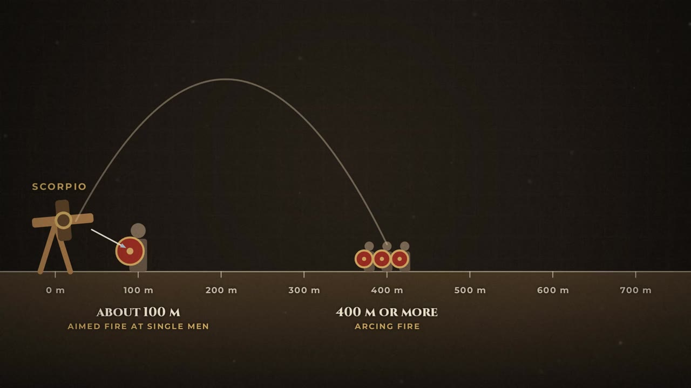
The punch was real. Alan Wilkins's replica bolt-shooters have driven bolts through iron shield bosses backed with eighteen millimetres of plywood. Against steel plate, he says, even a man in body armour would have been put out of action.
What mattered most was outranging the enemy. In A.D. 62 the general Corbulo drove back the Parthians with catapults because, as Tacitus tells it, Roman stones and bolts flew further than Parthian arrows.
Jotapata, A.D. 67
Now imagine that, multiplied. In Judaea in A.D. 67 the future emperor Vespasian besieges the fortress of Jotapata and lines up around one hundred and sixty machines: bolts whistling through the air, stones weighing a talent (about 26 kilograms), fire, a storm of arrows. The Jewish commander inside was Josephus, and it is his account that survives. The noise of the engines, he says, was terrible. One stone took the head off a man standing beside him and flung the skull three furlongs. Josephus may be exaggerating, but this is how it felt on the receiving end.
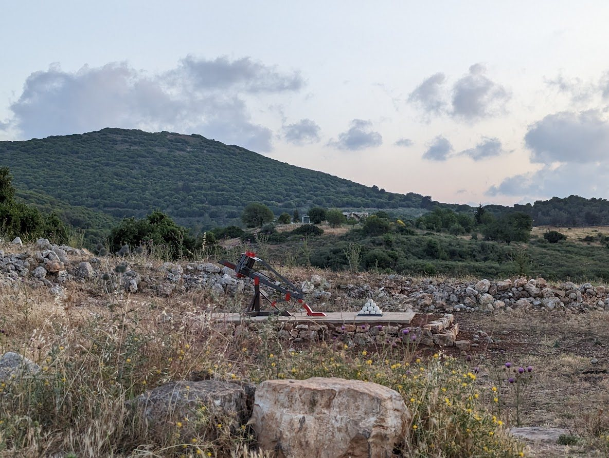
Cremona, A.D. 69
Artillery could even turn a battle. At Cremona in A.D. 69 Roman fought Roman, in the dark. Tacitus tells us that one immense engine, belonging to the Fifteenth Legion, was mowing down the enemy line with huge stones. The slaughter would have been enormous if two soldiers had not snatched up shields from the enemy dead, crept forward and cut the ropes that held its weights. They were cut down at once. Their names, Tacitus says, are lost, but the deed is certain.
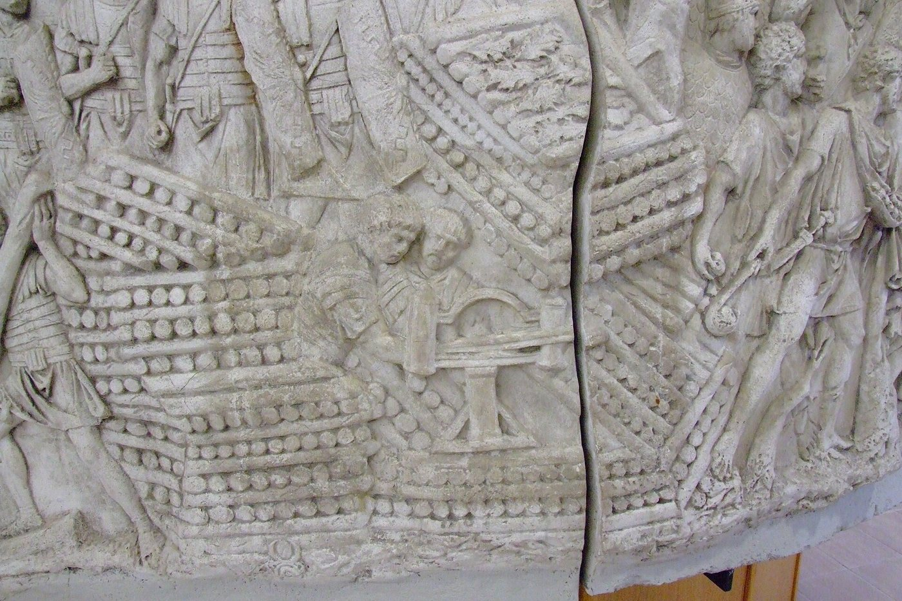
What the ground shows: Hod Hill and Maiden Castle
At Hod Hill in Dorset, excavators in the 1950s found seventeen iron bolt heads, most of them still standing in the chalk exactly where they had landed. Eleven were inside a single round hut. Only one had overshot. The archaeologist Sir Ian Richmond thought the Romans had picked out the chieftain's hut from somewhere between 130 and 170 metres and fired, to show the defenders what concentrated fire could do, and that the hill surrendered on the spot. A perfect demonstration of the scorpion's accuracy. Perhaps.
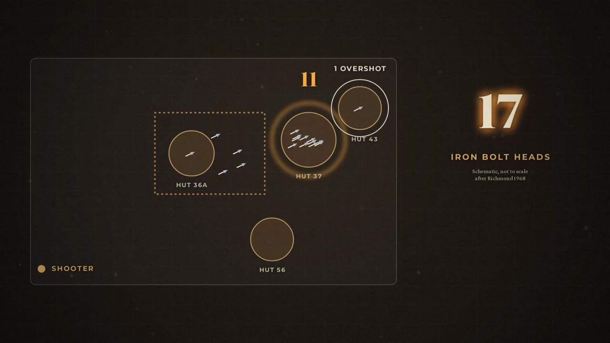
Another reading says the bolts were fired much later, as target practice, from the Roman fort built in the corner. Nobody can prove it either way.
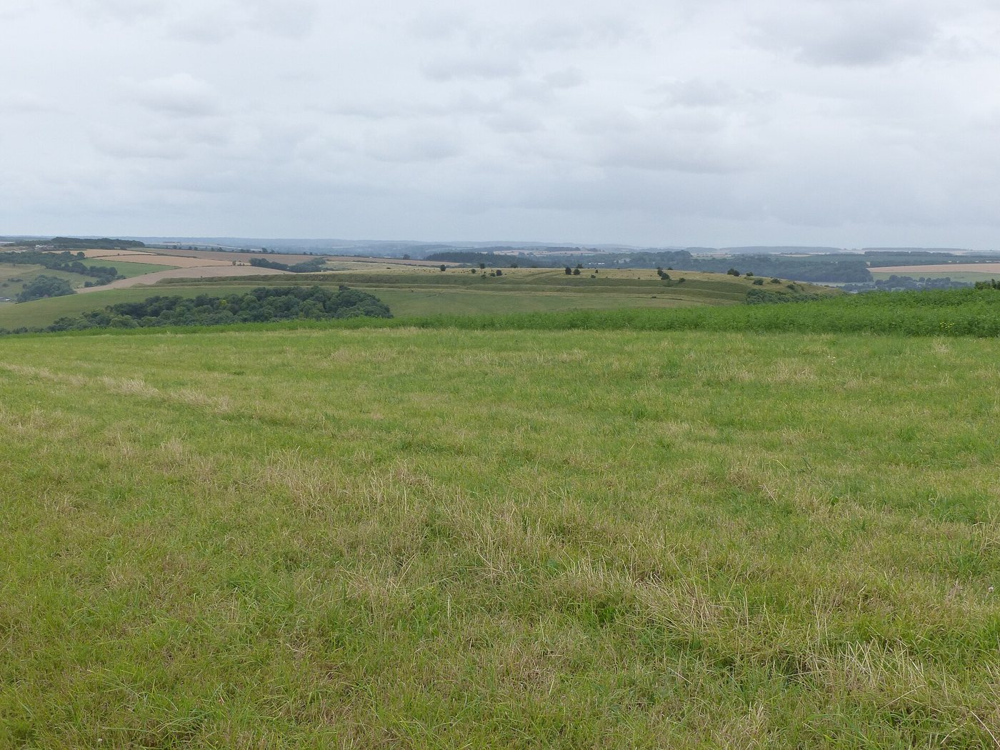
And the famous skeleton at Maiden Castle, with an iron point lodged in the spine, long labelled a Roman ballista bolt? A 2025 study from Bournemouth University says it is a spearhead, and that the Roman massacre never happened the way the textbooks told it.
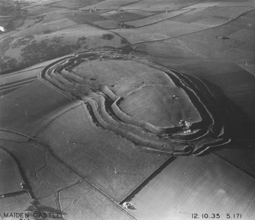
Be careful when you hear that this bolt or that skeleton proves the scorpion's reach. The best evidence is in the writers, the carvings and the machines themselves.
How the scorpion changed
By the second century the scorpion was changing: iron frames and compact, arch-shaped bracing, which can be seen on Trajan's Column. In the Greek east the hand-held version became the cheiroballistra, literally the hand-ballista. Small iron frames like these have turned up along the Danube.
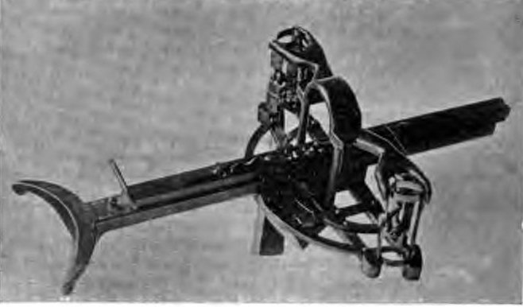
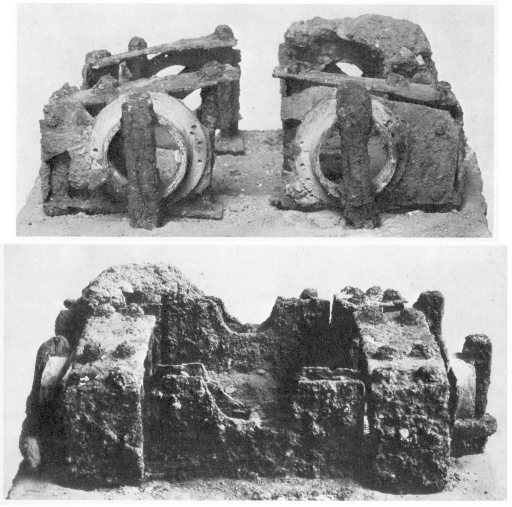
Even the name moved
To Vitruvius, a scorpio was a bolt-shooter and a ballista threw stones. Four centuries later, bolt-shooters were being called ballistae. And Ammianus Marcellinus, a veteran officer, wrote that scorpion now meant a different machine: the one-armed stone-thrower we call the onager. Its raised arm, he said, was the scorpion's sting.
Decline
The great torsion engines had weaknesses. Twisted-cord springs hated damp and swings in temperature. After Rome's western empire collapsed, the technology faded across western Europe. In the east it lived on. Procopius, writing in the sixth century, describes a bolt from a Roman ballista passing through a Gothic warrior's armour and body and pinning him to a tree.
The verdict
A sniper built from wood, iron and hair, tuned like a lyre. Accurate at a hundred metres, reaching four hundred, and frightening enough to stop an enemy in his tracks. But Rome had a bigger machine: one arm, a kick like a wild donkey, and boulders for ammunition. Next up: the onager, Rome's one-armed stone-thrower, and the machine that stole the scorpion's name.
Prefer to watch? The video on YouTube covers the same story with the full animations. Jump to a part:
- 0:00 The wall at Alesia, 52 B.C.
- 0:46 What is a Roman scorpion?
- 1:08 Born in an arms race
- 2:04 Vitruvius and the recipe
- 2:49 How a torsion engine works
- 3:28 Tuned like a lyre
- 3:43 The real thing: a machine from Xanten
- 4:10 A legion on the march
- 4:48 Shock weapons: Britain, 55 B.C.
- 5:22 How deadly was it, really?
- 6:15 Jotapata, A.D. 67
- 7:00 Cremona, A.D. 69
- 7:36 What the ground shows: Hod Hill and Maiden Castle
- 8:54 How the scorpion changed
- 9:16 Even the name moved
- 9:40 Decline
- 10:06 Verdict, and what comes next
Where it happened
- Alesia (Alise-Sainte-Reine, France) (52 B.C.): The siege where Caesar saw the machines at work, 52 B.C.
- Syracuse, Sicily (399 B.C.): The first true artillery, about 399 B.C.; Archimedes' small scorpions, 213 B.C.
- Tyre (332 B.C.): Alexander's siege, 332 B.C.
- Xanten, Germany (A.D. 100): The real find: parts of a scorpion from Xanten.
- Jotapata (Yodfat), Israel (A.D. 67): Vespasian's siege, A.D. 67.
- Cremona, Italy (A.D. 69): The night battle, A.D. 69.
- Hod Hill, Dorset, England (A.D. 44): Iron bolt heads found among the huts (the reading is disputed).
- Maiden Castle, Dorset, England (A.D. 44): A skeleton with a bolt in the spine (the reading is disputed).
Sources
Ancient writers and modern work
Ancient writers
Modern work
Where the evidence is disputed, the video says so: the Hod Hill bolts and the Maiden Castle skeleton are open questions, not proof.
Image credits
- Modern model. Photo: Ron L. Toms, CC BY 3.0
- Museum reconstruction. Photo: John E Ryelea, CC BY-SA 4.0
- Photo: Dave Dunford, CC BY-SA 4.0
- Photo: MatthiasKabel, CC BY-SA 3.0
- Photo: Proa 500, CC BY-SA 4.0
- Re-enactment at Yodfat. Photo: Tombah, CC BY-SA 4.0
- Reconstruction at MuséoParc Alésia. Photo: Carole Raddato, CC BY-SA 2.0
- Reconstruction at Yodfat. Photo: Tombah, CC BY-SA 4.0
- Replica scorpion (Legio VIII Augusta). Photo: Pierre C, CC BY-SA 3.0
- Replica: Alan Wilkins. Photo: Dot Boughton, Portable Antiquities Scheme, CC BY-SA 2.0
- Reproduction at Alésia. Photo: Rolf Krahl, CC BY-SA 2.0
- Trajan's Column: plates by Conrad Cichorius (1896) and photographs by Joe Mabel (CC BY-SA 3.0); the reliefs are contemporary Roman evidence
- Ballista parts from Ampurias: Erwin Schramm, 1918, public domain
- Cheiroballistra reconstruction drawing: Victor Prou, public domain
- Vitruvius: title page of the 1543 printed edition (BEIC) and a medieval manuscript (Metropolitan Museum of Art, CC0)
- Maiden Castle aerial photograph 1935 and excavation 1937: Major George Allen, public domain
- Bust of Julius Caesar: Wilfredor, CC BY-SA 4.0
Transcript
Read the full narration
The Roman Scorpion. Rome's sniper machine, taken apart. Fifty-two B.C. A Gaulish warrior stands on a burning wall, hurling lumps of tallow and pitch down onto the Roman siege works. Then something hits him. A bolt, loosed from a machine he never even saw, goes clean through his right side. He falls. The man beside him steps over the body, and takes his place. The same invisible sting takes him too. A third steps up. Then a fourth. Julius Caesar was watching, and he wrote it down, because, he said, it was worth remembering. This is the Roman scorpion. A machine that stored the strength of twisted rope, and released it in a single snap. Today we're taking one apart. How it worked. Who built it. How deadly it really was. And what the evidence can prove, and what it can't. Because the truth is stranger than the legend. The scorpion wasn't a Roman invention. It was Greek, born in an arms race. Around three ninety-nine B.C., Dionysius, the tyrant of Syracuse, gathered the best craftsmen he could find, and told them to invent new weapons. The result was the first true artillery. A giant crossbow, braced against the belly. A few generations later, engineers discovered something far more powerful. Torsion. Instead of bending a bow, you twist a rope, and let it spring back. By the time of Alexander the Great, torsion machines were in action at the siege of Tyre. And Rome met them as a victim. A Byzantine encyclopedia, the Suda, says that when the Romans besieged Syracuse, Archimedes' little scorpions fired through tiny openings in the walls, straight at the soldiers below. The Romans took the hint. By the age of Augustus, the scorpion was standard kit. And we know how it was built, because an army engineer wrote the manual. Vitruvius spent his career supplying and repairing ballistae, scorpions and other artillery, and he gives the recipe in Book Ten of his great work on architecture. It's beautifully simple. One number rules everything. The length of the bolt. Divide it by nine. That's the width of the hole the springs pass through. Every other part of the machine is measured in multiples of that hole. The channel the bolt slides along? Nineteen holes long. No blueprint needed. Just a bolt, and some arithmetic. Now here's the genius. A bow stores its energy in bent wood. The scorpion stores it in twist. On each side of the frame sits a fat bundle of cord. Sinew, or, as Vitruvius says, hair. Generally women's hair. Each arm is jammed into the middle of its bundle. Crank the winch, and the bowstring drags both arms backward, twisting the bundles tighter and tighter, like wringing out a wet towel. Pull the trigger, and all that stored twist snaps back, whipping the arms forward. The string hurls the bolt down its groove. And crews didn't just build these machines. They tuned them. Vitruvius says each side was tightened until, struck by hand, both springs gave the same note. Roman artillery was tuned by ear, like a lyre. And we can hold the real thing. In 1999, pieces of a small Roman bolt-shooter were collected from a gravel pit near Xanten, in Germany. A first-century machine, with its wooden frame almost intact. Replicas, built to the millimetre, show what it was. Compact. Plated with metal. Light enough, says the engineer Alan Wilkins, to carry on one shoulder. Now picture a legion on the march. The writer Vegetius, late, and describing an idealised older army, says every legion had fifty-five of these on carts. One for every century. Mules to pull it. And a squad of eleven men to crew it. They stood behind the heavy infantry. And Vegetius makes a bold promise: that against their onslaught, neither armoured cavalry nor shield-bearing infantry could stand. Trajan's Column, dedicated in A.D. one hundred and thirteen, shows these carts in the field. Mules in front. Crews at work. These machines weren't only killers. They were shock weapons. Britain, fifty-five B.C. Caesar's transports are stuck off a beach crowded with British warriors. So he orders his warships, loaded with slings, arrows and engines, to row around to the enemy's open flank. The Britons, Caesar says, were startled by the strange ships, the movement of the oars, and the engines, which were new to them. They fell back. Just long enough for the eagle-bearer of the Tenth Legion to jump into the surf. So how deadly was it, really? Out to about a hundred metres, a scorpion could pick off a single man. Lobbed in an arc, its bolts could carry four hundred metres, or more. One Greek engineer claimed six hundred and forty metres with a big machine, a record that the writer who preserved it admitted was, quote, not easily believed. And the punch was real. Alan Wilkins's replica bolt-shooters have driven bolts through iron shield bosses backed with eighteen millimetres of plywood. Against steel plate, he says, even a man in body armour would have been put out of action. What mattered most was outranging the enemy. In A.D. sixty-two, the general Corbulo drove back the Parthians with catapults, because, as Tacitus tells it, Roman stones and bolts flew further than Parthian arrows. Now imagine that, multiplied. Judaea, A.D. sixty-seven. The future emperor Vespasian besieges the fortress of Jotapata, and lines up around one hundred and sixty machines. Bolts whistling through the air. Stones weighing a talent, about twenty-six kilograms. Fire. A storm of arrows. The Jewish commander inside was Josephus, and it's his account that survives. The noise of the engines, he says, was terrible. One stone took the head off a man standing beside him, and flung the skull three furlongs. Josephus may be exaggerating. But this is how it felt, on the receiving end. Artillery could even turn a battle. Cremona, A.D. sixty-nine. Roman fights Roman, in the dark. Tacitus tells us that one immense engine, belonging to the Fifteenth Legion, was mowing down the enemy line with huge stones. The slaughter would have been enormous, if two soldiers hadn't snatched up shields from the enemy dead, crept forward, and cut the ropes that held its weights. They were cut down at once. Their names, Tacitus says, are lost. But the deed is certain. But what does the ground itself show? At Hod Hill, in Dorset, excavators in the nineteen-fifties found seventeen iron bolt heads, most of them still standing in the chalk exactly where they had landed. Eleven were inside a single round hut. Only one had overshot. The archaeologist, Sir Ian Richmond, thought the Romans had picked out the chieftain's hut, from somewhere between one hundred and thirty and one hundred and seventy metres, and fired. To show the defenders what concentrated fire could do. And that the hill surrendered on the spot. A perfect demonstration of the scorpion's accuracy. Perhaps. Another reading says the bolts were fired much later, as target practice, from the Roman fort built in the corner. Nobody can prove it either way. And the famous skeleton at Maiden Castle, with an iron point lodged in his spine, long labelled a Roman ballista bolt? A twenty twenty-five study from Bournemouth University says it's a spearhead, and that the Roman massacre never happened the way the textbooks told it. So be careful when you hear that this bolt, or that skeleton, proves the scorpion's reach. The best evidence is in the writers, the carvings, and the machines themselves. By the second century, the scorpion was changing. Iron frames. Compact, arch-shaped bracing, which you can see on Trajan's Column. In the Greek east, the hand-held version became the cheiroballistra. Literally, the hand-ballista. Small iron frames like these have turned up along the Danube. Even the name drifted. To Vitruvius, a scorpio was a bolt-shooter, and a ballista threw stones. Four centuries later, bolt-shooters were being called ballistae. And Ammianus Marcellinus, a veteran officer, wrote that scorpion now meant a different machine: the one-armed stone-thrower we call the onager. Its raised arm, he said, was the scorpion's sting. The great torsion engines had weaknesses. Twisted-cord springs hated damp, and swings in temperature. And after Rome's western empire collapsed, the technology faded across western Europe. In the east, it lived on. Procopius, writing in the sixth century, describes a bolt from a Roman ballista passing through a Gothic warrior's armour and body, and pinning him to a tree. So that's the Roman scorpion. A sniper built from wood, iron, and hair. Tuned like a lyre. Accurate at a hundred metres. Reaching four hundred. And frightening enough to stop an enemy in his tracks. But Rome had a bigger machine. One arm. A kick like a wild donkey. And boulders for ammunition. Next up: the onager. Rome's one-armed stone-thrower, and the machine that stole the scorpion's name. It's on your screen right now. Tap it, and I'll see you behind the wall.
More episodes

The Roman Onager: Rome's One-Armed Stone-Thrower
A one-armed Roman stone-thrower, named after a wild ass, shook Persian siege towers apart at Amida in A.D. 359. How it worked, how it was crewed and carried, what it really did, and what...
Read the story
What Is a Caltrop?
A few centimetres of iron with four spikes, so shaped that one point always stands up. What the Romans called it, the story of buried caltrops at Gaugamela that only Curtius tells, Vegetius...
Read the story
What Was a Pugio?
A coin struck by Caesar's killers shows two daggers. The pugio, Rome's short dagger, appears in the stories of Caesar, Scaevinus, Arria and Sertorius, none of them a battle. What museums...
Read the story